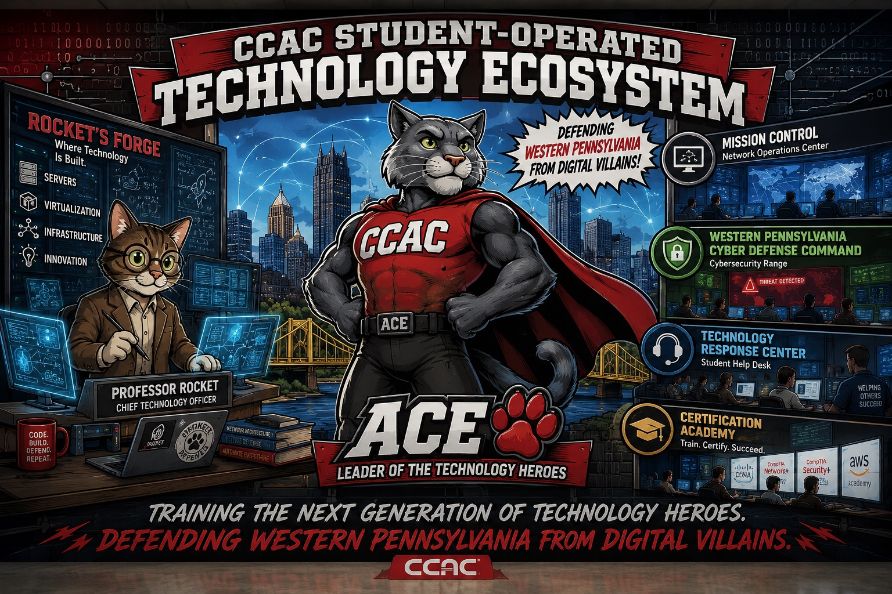
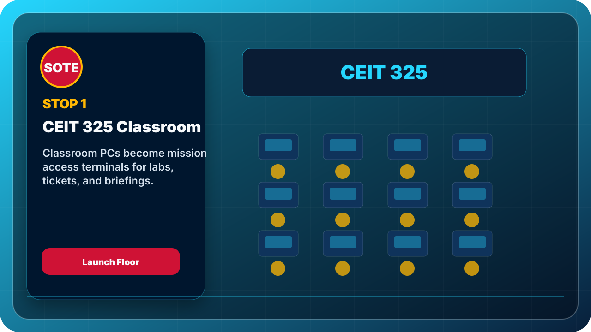
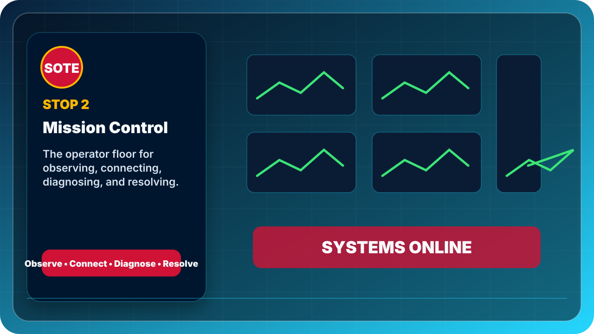
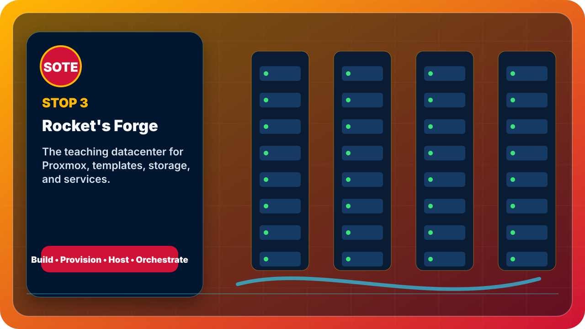

Tour Mode
Walk the approved route from CEIT 325 through Mission Control, Rocket’s Forge, the Cyber Defense Command, Patch Bay Alpha, and Rocket’s Engineering Bay.
OpenVisitor Tour + Command Portal
A restored full-site build that keeps the individual pages from the v0.7-era portal and adds the approved visitor one-sheet, mission badges, tour media, and public tester banner.

Restored Site Map
This build merges the visitor tour additions into the broader portal structure instead of removing the individual pages.
Walk the approved route from CEIT 325 through Mission Control, Rocket’s Forge, the Cyber Defense Command, Patch Bay Alpha, and Rocket’s Engineering Bay.
OpenEach major SOTE space now has its own page again for tours, public explanation, and future QR codes.
OpenUse the locked project status icon set to show what is conceptual, drafted, ready, in progress, online, blocked, or future expansion.
OpenOpen the digital badge gallery or print the badge sheet for Student Technology Corps recognition.
OpenUse the one-page handout for open houses, demos, tours, and Technology Cadet onboarding.
OpenPreserve the assistant/kiosk concept as a dedicated page for future controlled knowledge assistant work.
OpenKeep the test deployment and future R2-WEB01 path visible for GitHub Pages, Netlify, and internal hosting.
OpenApproved Media Set
The visitor tour media from v0.2 is retained, including the updated Patch Bay Alpha card. The individual pages from the larger command portal structure are restored.


